01
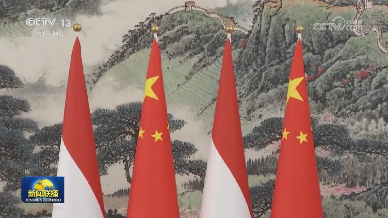
习近平会见印度尼西亚总统
11月20日上午，国家主席习近平在深圳会见来华出席亚太经合组织领导人非正式会议的印度尼西亚总统普拉博沃，两国元首共同宣布启动两国全面经济伙伴关系协定谈判。
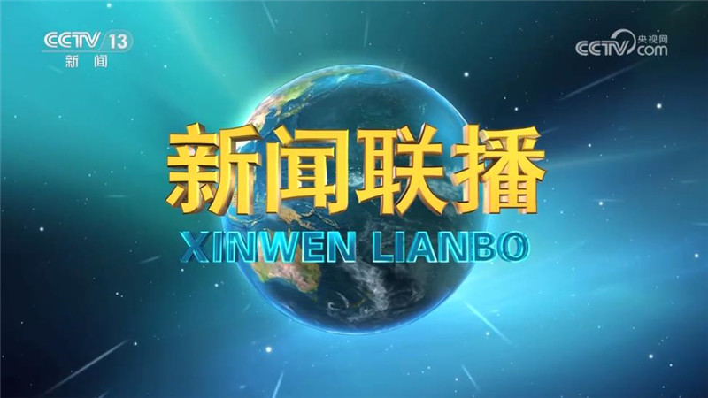

11月20日上午，国家主席习近平在深圳会见来华出席亚太经合组织领导人非正式会议的印度尼西亚总统普拉博沃，两国元首共同宣布启动两国全面经济伙伴关系协定谈判。
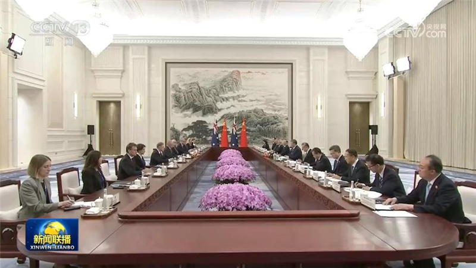
11月20日上午，国家主席习近平在深圳会见来华出席亚太经合组织领导人非正式会议的澳大利亚总理阿尔巴尼斯。
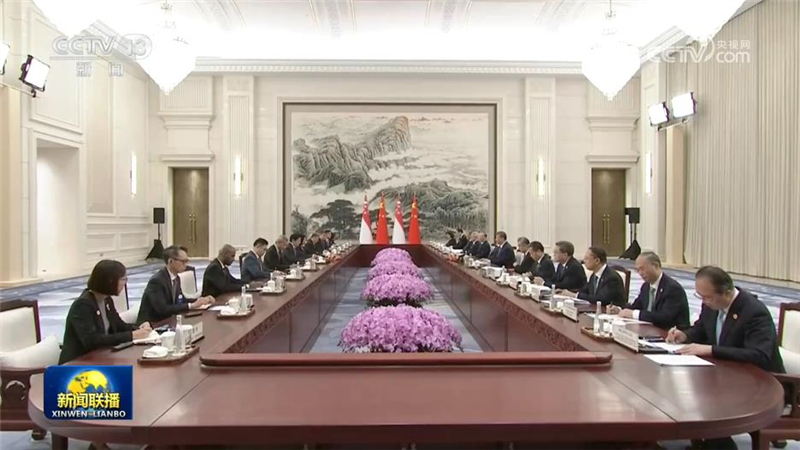
11月20日上午，国家主席习近平在深圳会见来华出席亚太经合组织领导人非正式会议的新加坡总理黄循财。
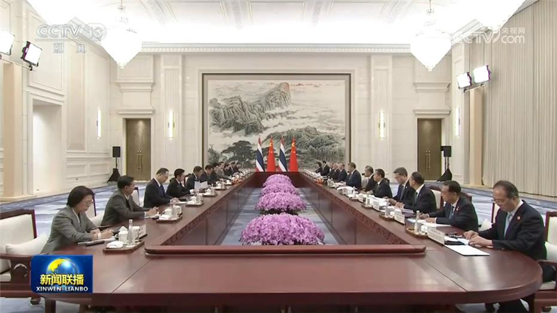
11月20日上午，国家主席习近平在深圳会见来华出席亚太经合组织领导人非正式会议的泰国总理阿努廷。
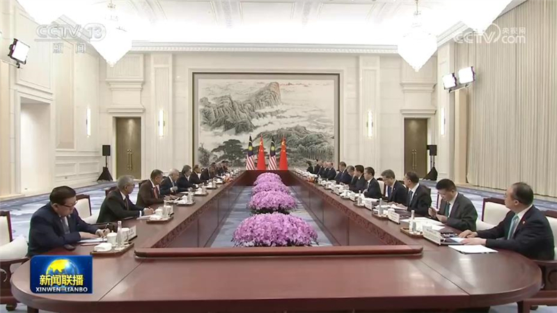
11月20日中午，国家主席习近平在深圳会见来华出席亚太经合组织领导人非正式会议的马来西亚总理安瓦尔。
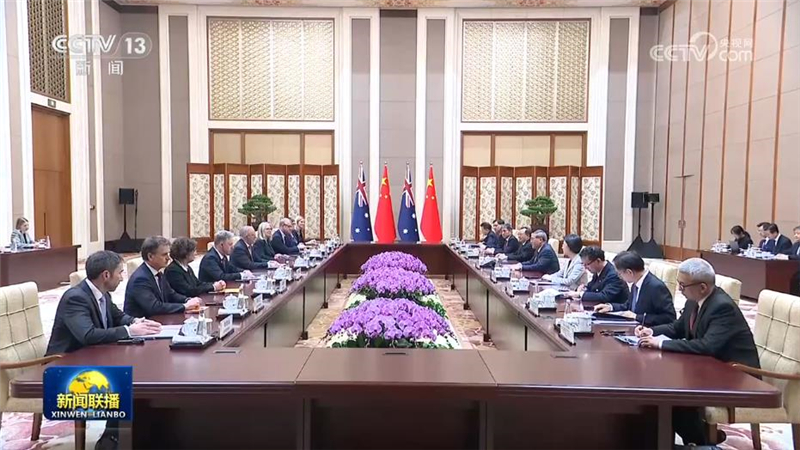
国务院总理李强20日下午在京同澳大利亚总理阿尔巴尼斯举行第十一轮中澳总理年度会晤。
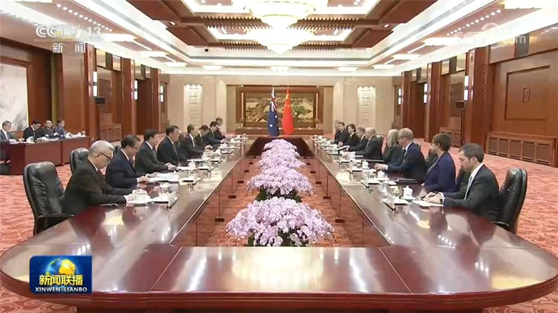
全国人大常委会委员长赵乐际20日下午在北京会见澳大利亚总理阿尔巴尼斯。赵乐际表示，今天上午，习近平主席同总理先生进行战略沟通，为两国关系进一步发展指明了方向。中方愿同澳方以明年中澳建交55周年为契机，共同落实好两国领导人重要共识，增进战略互信、拓展务实合作、深化人文交流、加强多边协调，推动构建更加成熟稳定、更加富有成果的中澳全面战略伙伴关系。……
应新加坡副总理颜金勇邀请，中共中央政治局常委、国务院副总理丁薛祥将于11月22日至23日访问新加坡，同颜金勇副总理共同主持中新双边合作联委会第二十二次会议、中新苏州工业园区联合协调理事会第二十七次会议、中新天津生态城联合协调理事会第十八次会议、中新（重庆）战略性互联互通示范项目联合协调理事会第十次会议。
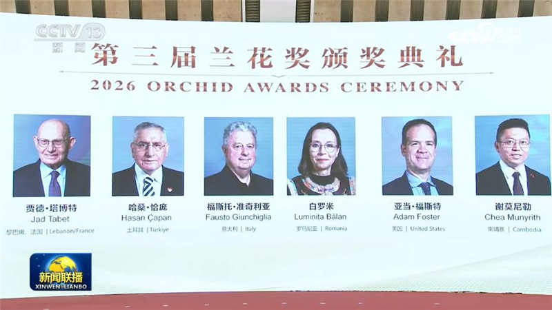
11月20日，第三届兰花奖颁奖典礼在京举行。兰花奖旨在践行习近平主席提出的全球文明倡议，表彰奖励为弘扬全人类共同价值、促进中外文明交流互鉴作出突出贡献的国际友人和机构。来自法国的让-马里·居斯塔夫·勒克莱齐奥、新加坡的马凯硕、美国的亚当·福斯特等10位国际友人获得本届兰花奖。
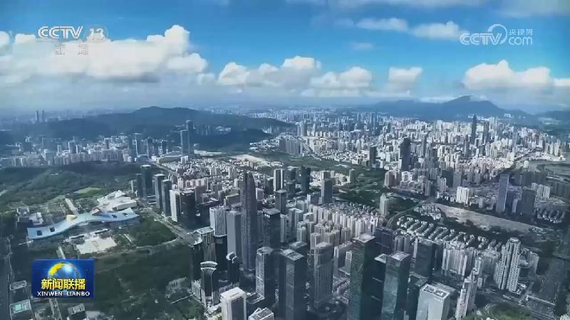
财政部成功在香港发行美元主权债券
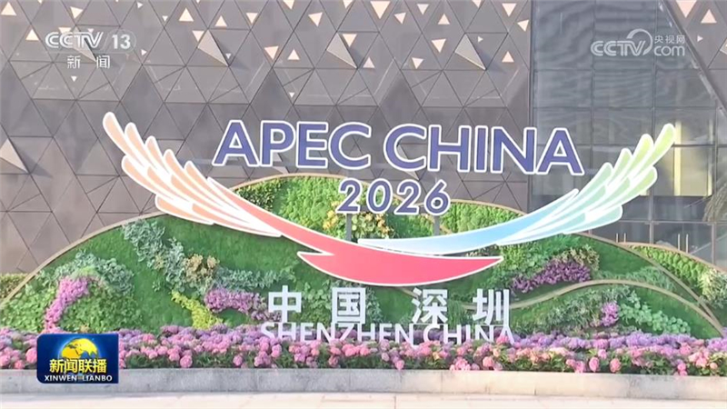
国际人士表示，习近平主席在亚太经合组织工商领导人峰会上的主旨演讲，以及在亚太经合组织第三十三次领导人非正式会议上发表的重要讲话，围绕建设亚太共同体提出中国主张和中国方案，为续写“亚太奇迹”擘画蓝图，将有力推动亚太合作迈出新步伐、开创新局面，也为地区乃至世界发展注入信心与力量。
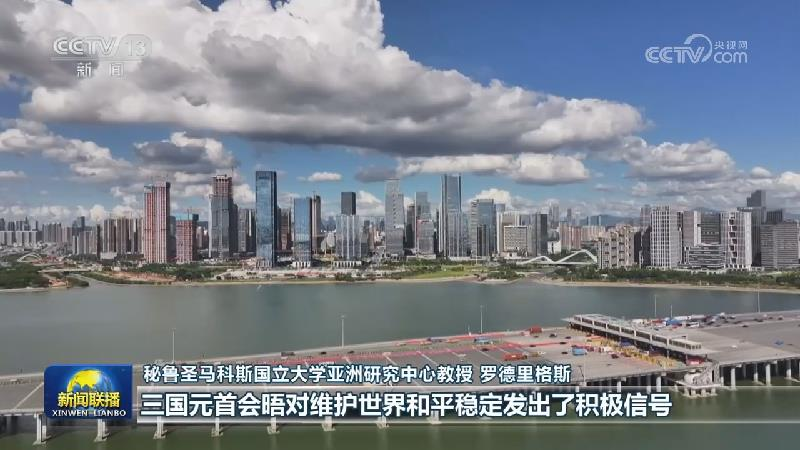
国际人士表示，中俄美元首会晤是一次历史性的会晤，为大国协调互动构建了新范式，为世界和平与稳定注入信心和动力。
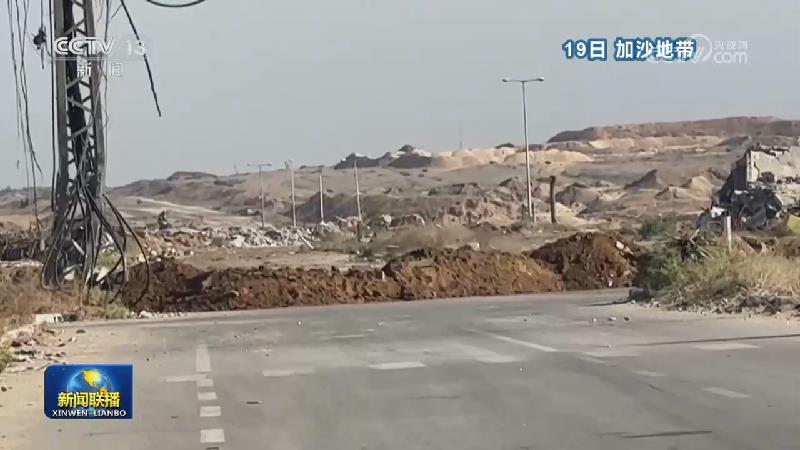
日本民众集会反对高市政府扩军修宪动向